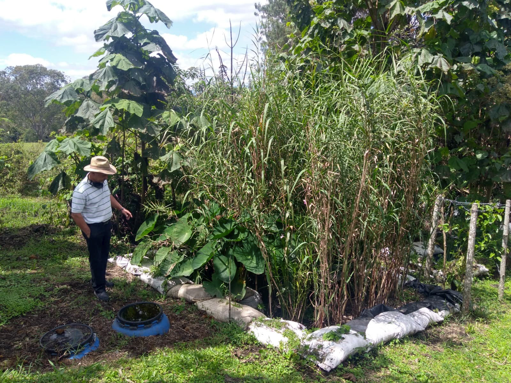
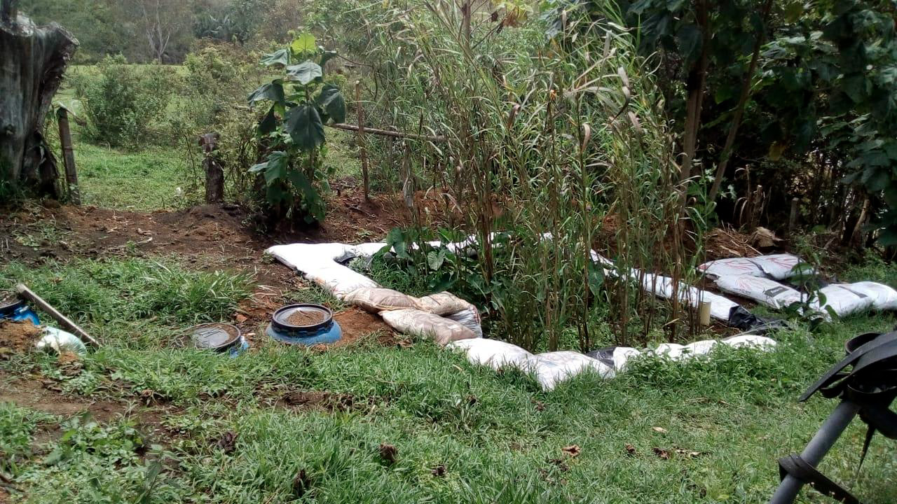
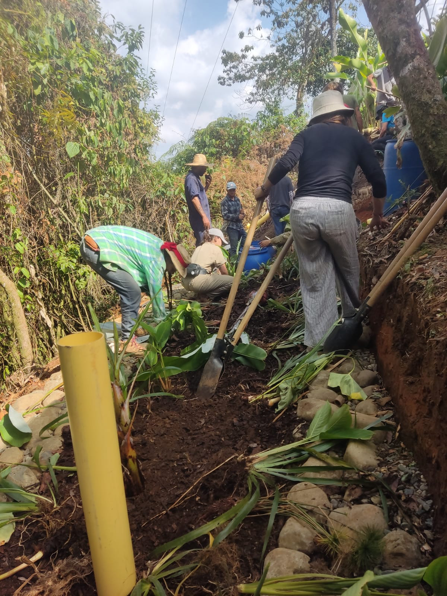
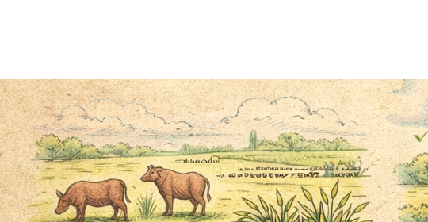
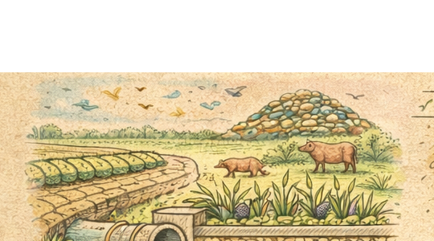
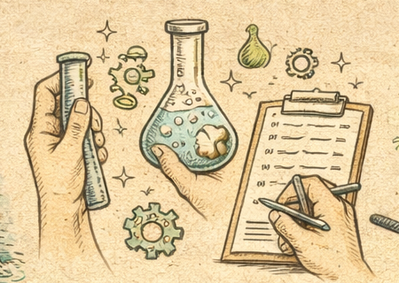
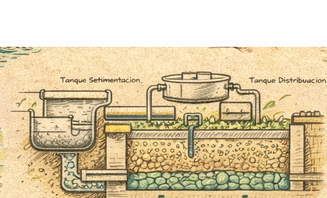
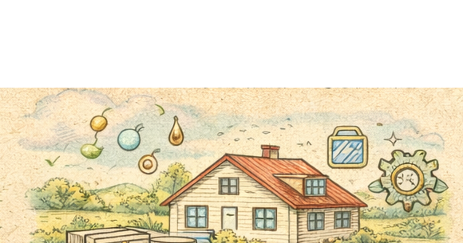
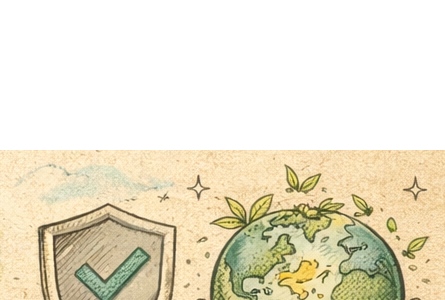
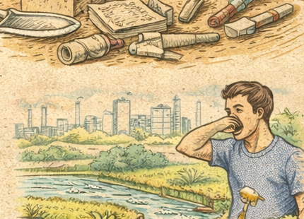

Tierra & Agua
Soluciones naturales para el agua, el hábitat y la construcción consciente
Diseñamos sistemas funcionales para proyectos que necesitan tratar aguas residuales o grises con menor impacto, mejor lectura del contexto y una lógica clara de operación.
Trabajamos con biofiltros, humedales artificiales y soluciones en bioconstrucción para proyectos que buscan mayor coherencia entre territorio, uso, sostenibilidad y forma de habitar.



Diseñamos sistemas funcionales para proyectos que necesitan tratar aguas residuales o grises con menor impacto, mejor lectura del contexto y una lógica clara de operación.
Trabajamos con biofiltros, humedales artificiales y soluciones en bioconstrucción para proyectos que buscan mayor coherencia entre territorio, uso, sostenibilidad y forma de habitar.
Por qué elegirlo
Resuelve un problema real del proyecto

Tu sistema hoy no resuelve bien el agua
Hay descarga, saturacion, dudas operativas o simplemente no existe una solucion clara en sitio.

Una alternativa natural y viable
Buscas una solucion seria, mas ligera de operar y mejor integrada con el lugar.

Criterio tecnico, no promesas
Aqui el valor esta en el diagnostico, el diseno y la implementacion, no en promesas decorativas.
Tratamiento natural bien disenado
Biofiltros y humedales que responden al tipo de agua, al caudal y a las condiciones del sitio.
Decidir con mas claridad
Entiendes que se hara, por que conviene y que variables importan antes de comprometer presupuesto.
Operacion mas clara y sostenible
La solucion se piensa para construirse bien y poder sostenerse despues de la obra.
Lo que hacemos
Vendemos una solucion completa, no solo un humedal bonito
El proyecto pasa por una lectura tecnica minima, una propuesta coherente con el contexto y una ejecucion acompasada para que el sistema tenga sentido una vez se use.
Diagnostico del caso
Leemos el tipo de agua, el numero de usuarios, el terreno, el uso del predio y las restricciones del sitio.
Diseno del sistema
Definimos pretratamiento, humedal, materiales, circulacion del agua y mantenimiento esperado.
Construccion y supervision
Acompanamos la implementacion para que la solucion no pierda su logica tecnica en obra.
Puesta en marcha y seguimiento
Te ayudamos a entender como opera el sistema y que requiere para sostener buen desempeno.

Pretratamiento
Humedal
Salida final
Visual rapido
Pretratamiento, humedal y salida final deben trabajar como un solo sistema
Eso es lo que convierte la propuesta en una solucion operable y no en una pieza aislada.
Ver como funciona un biofiltroSectores con mejor fit
Donde esta solucion suele tener mas sentido comercial y operativo
Si tu proyecto cae en alguno de estos escenarios, ya tiene sentido hablar.

Vivienda y lotes rurales
Predios que necesitan resolver aguas grises o residuales con una solucion local y durable.
Hoteles y restaurantes
Operaciones que necesitan tratar mejor el agua sin instalar una planta compleja y sobredimensionada.
Proyectos comunitarios
Casos donde el mantenimiento, la pedagogia y la claridad de uso son determinantes.

Negocios con enfoque ambiental
Marcas y espacios que quieren coherencia real entre operacion, discurso y gestion del agua.

Objecion comun
No quiero una solucion experimental o solo decorativa
- se disena segun el tipo de agua y el uso real del sitio
- el pretratamiento se toma como parte critica del sistema
- la construccion se acompana para no perder funcionalidad
- el mantenimiento se piensa desde el inicio
Lo que compras
Una ruta clara para pasar de problema hidrico a sistema implementable
- lectura tecnica minima del caso
- propuesta adaptada al contexto
- construccion y supervision
- mejor sostenibilidad operativa